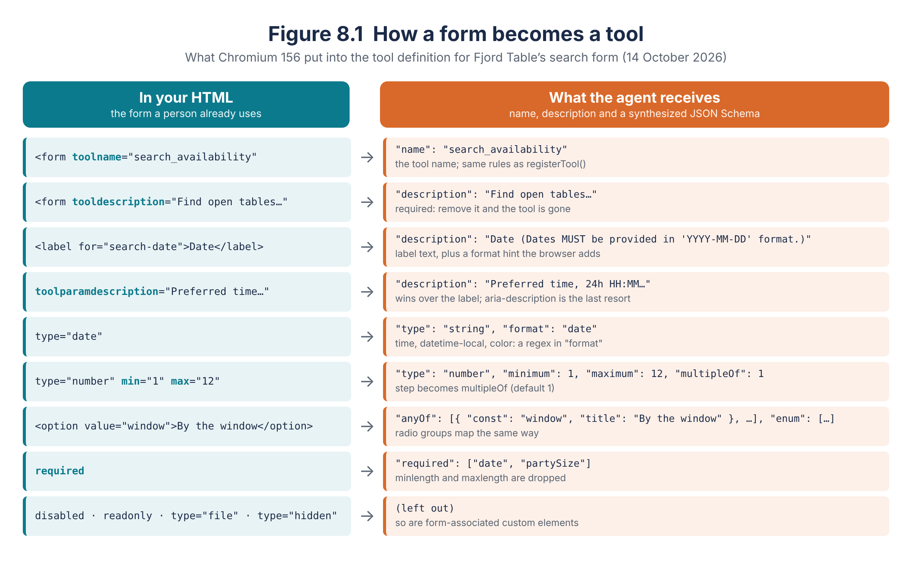
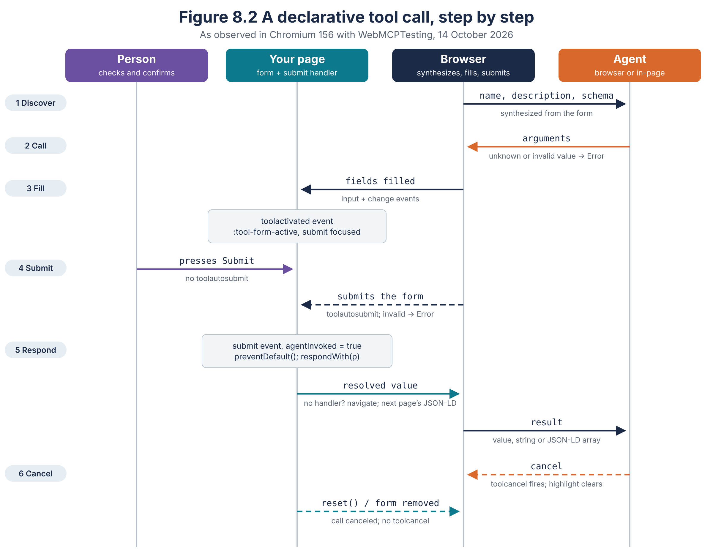

“Much of a site’s functionality is provided via semantic HTML elements like
<form>, and its various inputs.”— WebMCP Declarative API Explainer1
A form is already a tool
Look at Fjord Table’s booking page as an agent would. Long before anyone wrote registerTool(), the page already had a search form with a date field, a time field, a number of guests and a seating choice, plus a booking form that asks for the same things and a note for the kitchen. Each field has a name and a label, and some are marked required or limited with min and max. Each form has a submit button and does one job. That is most of what a tool definition contains: a name, a description, typed parameters with constraints, and an action. The declarative API asks whether you can say “this form is a tool” with a few HTML attributes and let the browser work out the rest.
In Chrome’s implementation you can. Add toolname and tooldescription to a <form>, and the browser builds a tool definition from the form’s controls. When an agent calls the tool, the browser fills in the fields in front of the user and either waits for the user to press Submit or submits the form itself. Your page sees an ordinary submit event with one new property, agentInvoked, and can answer the agent through respondWith(). There are also two events for the start and end of a call and two CSS pseudo-classes for highlighting the form the agent is working on.2
This chapter covers all of that, using Fjord Table’s two forms. It also covers something unusual for a book chapter. On 8 October 2026, the WebMCP specification removed the declarative API, six days before this chapter was written.3 The API still ships in Chrome, in the WebMCP origin trial and behind the testing flag, Chrome’s documentation still describes it and links the trial, and the Chrome team has said it plans to ship it “shortly after” the imperative API.3:1 But no specification describes it now. That makes the browser’s behaviour the only reference, so I tested it. Everything marked observed in this chapter comes from Chromium 156.0.8078.4 with the WebMCPTesting feature enabled (the switch behind chrome://flags/#enable-webmcp-testing), run on 14 October 2026. Each observation is a test in the book’s companion repository, so you can check it against whatever Chrome you are running.4
Where the declarative API came from
The idea is almost as old as WebMCP’s public repository. In September 2025, a month after the explainer repository opened, issue #22 asked why WebMCP was “being pursued exclusively as a JavaScript API,” and suggested that “simply adding a few attributes, combined with existing HTML semantics should do the trick for a lot of scenarios.” Its sketch used a <form> with tool-name, tool-description and a per-input tool-prop-description.7 A community pull request that month, #26, worked out a fuller proposal. According to its description, the design was shaped by building a real application and a polyfill during a hackathon.8 The editors replaced it with their own Declarative API Explainer, pull request #76, which was merged on 9 March 2026.9
The explainer states the motivation plainly. Not all site functionality is exposed through JavaScript functions, and the functions that are “take some effort to rewrite with an agent invoker in mind.” A great deal of a site’s functionality is in its forms. So the proposal has three parts: attributes that turn forms and their controls into tools, an algorithm that “compiles” a form into an input schema, and two ways to send a result back to the agent.1:1
There is a second reason the declarative API matters, which Chapter 4 touched on. WebKit’s objection to WebMCP is that a separate JavaScript layer for agents duplicates what HTML and ARIA already describe. Annotating the forms a site already has, so that people and agents use the same controls, is the closest WebMCP has come to meeting that objection. That is one reason to expect the idea to come back in some form even though it has left the spec.
The removal itself was not a rejection. The specification never had a declarative algorithm, only placeholders. The explainer still admits that the schema-synthesis algorithms “are TBD,” and that “Chromium is implementing a loose version of this and will conduct testing/trials to see if what we’ve come up with should be supported by the community as a general approach.”1:2 Pull request #338 brought the spec into line with that: the imperative API is specified, and the declarative API is an experiment Chrome is running. The README now says it plainly: “Even if a declarative API is added, it would complement rather than replace the imperative API.”3:4
Three attributes
Here is Fjord Table’s search form as it was before anyone thought about agents. It submits to a results page with a GET request, uses native controls and labels every field.
<form id="search-form" class="search" action="results.html" method="get">
<label for="search-date">Date</label>
<input id="search-date" name="date" type="date" required>
<label for="search-time">Preferred time</label>
<input id="search-time" name="time" type="time">
<label for="search-party">Guests</label>
<input id="search-party" name="partySize" type="number" min="1" max="12" required>
<label for="search-seating">Seating</label>
<select id="search-seating" name="seating">
<option value="">No preference</option>
<option value="window">By the window</option>
<option value="indoor">Indoor</option>
<option value="terrace">On the terrace</option>
</select>
<button type="submit">Find a table</button>
</form>
Listing 8.2 makes it a tool. The changes are three attributes on the <form> element and one on the time input.
<form id="search-form" class="search" action="results.html" method="get"
toolname="search_availability"
tooldescription="Find open tables at Fjord Table for a date, time and party size. Returns up to five nearby time slots. Does not make a booking."
toolautosubmit>
<label for="search-date">Date</label>
<input id="search-date" name="date" type="date" required>
<label for="search-time">Preferred time</label>
<input id="search-time" name="time" type="time"
toolparamdescription="Preferred time, 24h HH:MM. Leave out for any time.">
<label for="search-party">Guests</label>
<input id="search-party" name="partySize" type="number" min="1" max="12" required>
<label for="search-seating">Seating</label>
<select id="search-seating" name="seating">
<option value="">No preference</option>
<option value="window">By the window</option>
<option value="indoor">Indoor</option>
<option value="terrace">On the terrace</option>
</select>
<button type="submit">Find a table</button>
</form>
toolname is the tool’s name. It plays the role of name in registerTool(), and the explainer calls the two analogous.1:3 Use the same naming rules as Chapter 5: ASCII letters, digits, underscores, hyphens and dots, unique within the document. That isn’t just good style. In Chromium 156, a form whose toolname was bad name!, or which reused a name another tool already had, simply was not registered (observed).4:1 Nothing told the page. With registerTool() the same mistakes reject with an InvalidStateError you can catch (Chapter 5). For forms, how registration failures should be reported is still an open question, issue #182, which suggests a future toolerror event.10 Until then, check getTools() in development, as the tests for this chapter do.
tooldescription plays the role of description, and everything Chapter 5 said about descriptions applies: say what the tool does, what it returns, and what it does not do. Chrome’s guide says that removing either toolname or tooldescription unregisters the tool.2:2 Chromium 156 behaved that way when I removed toolname. It did not when I set tooldescription to an empty string. A form with tooldescription="" stayed registered (observed), even though registerTool() rejects an empty description.4:2 Don’t rely on either behaviour. Write a real description.
toolautosubmit is a boolean attribute. It lets the browser submit the form after filling it in. We come back to it below, because it is the most important decision in this chapter.
toolparamdescription goes on an individual control and becomes that parameter’s description in the generated schema.1:4 You rarely need it, because the browser reuses what the form already says. Chrome’s guide says that without the attribute, the browser uses the text of the control’s <label>, and if there is no label, its aria-description.2:3 Chromium 156 followed that order (observed): toolparamdescription first, then the label, then aria-description. It ignored placeholder and title.4:3 In Listing 8.2 the date, guests and seating fields are described by their labels. The time field gets an explicit description because the label “Preferred time” doesn’t tell an agent the format, or that the field can be left out.
That is the whole registration API. There is no script and no await, and nothing needs feature detection. A browser without WebMCP ignores attributes it doesn’t know, and the form behaves exactly as before. The demo’s tests check that in a plain Chromium build: the page loads with no errors, 'agentInvoked' in SubmitEvent.prototype is false, and a person can search and book as usual.4:4
Because the tool is the form, its lifetime is the form’s lifetime. Insert a form with the attributes and a tool appears. Remove the form, or remove one of its attributes, and the tool goes away. Chrome’s best-practices guide presents this as the declarative version of dynamic registration: you manage which tools exist “by adding or removing the tool attributes on a form.”11 In Chromium 156, adding and removing tool forms also fired the toolchange event on document.modelContext that Chapter 6 uses to keep agents in sync (observed).4:5
Schema synthesis: what the agent actually sees
An agent never sees your HTML. It sees a name, a description and a JSON Schema, the same shape it gets from registerTool(). For a declarative tool, the browser writes the schema. This is the part of the API the explainer calls “TBD,” so the only way to know what agents receive is to ask the browser.1:6 document.modelContext.getTools() returns declarative tools alongside imperative ones, with inputSchema as an object, so the check takes one line in DevTools. Listing 8.3 is what Chromium 156 produced for Listing 8.2, unedited.
getTools()){
"type": "object",
"properties": {
"date": {
"type": "string",
"format": "date",
"description": "Date (Dates MUST be provided in 'YYYY-MM-DD' format.)"
},
"time": {
"type": "string",
"format": "^([01][0-9]|2[0-3]):[0-5][0-9]$",
"description": "Preferred time, 24h HH:MM. Leave out for any time."
},
"partySize": {
"type": "number",
"minimum": 1,
"maximum": 12,
"multipleOf": 1,
"description": "Guests"
},
"seating": {
"type": "string",
"anyOf": [
{
"type": "string",
"const": "",
"title": "No preference"
},
{
"type": "string",
"const": "window",
"title": "By the window"
},
{
"type": "string",
"const": "indoor",
"title": "Indoor"
},
{
"type": "string",
"const": "terrace",
"title": "On the terrace"
}
],
"enum": [
"",
"window",
"indoor",
"terrace"
],
"description": "Seating"
}
},
"required": [
"date",
"partySize"
]
}

Most of this is what you would hope for. The required attributes became the schema’s required list. min and max became minimum and maximum. The <select> became an enum of its option values plus an anyOf list that pairs each value with its visible text as a title. Chapter 11 returns to that pattern for enums, because the agent sees both what to send and what it means. The labels became descriptions. Table 8.1 summarizes what I observed for other controls.
Table 8.1 — How Chromium 156 mapped form controls to JSON Schema (observed, 14 October 2026)
| In the form | In the synthesized schema |
|---|---|
type="text", email, url, tel, <textarea> |
"type": "string". pattern is copied; minlength, maxlength and the email/URL type are not |
type="date" |
"type": "string", "format": "date", plus “(Dates MUST be provided in 'YYYY-MM-DD' format.)” added to the description |
type="time", datetime-local, color |
"type": "string" with a regular expression in "format" |
type="number", type="range" |
"type": "number" with minimum, maximum, and multipleOf from step (1 by default) |
type="checkbox" (single) |
"type": "boolean" |
Checkboxes sharing a name; <select multiple> |
"type": "array" of an enum, with "uniqueItems": true |
Radio group; <select> |
enum of the values plus anyOf with each value’s label or option text as title |
required |
Listed in required |
A control outside the form with form="…" |
Included |
disabled, readonly, type="hidden", type="file", form-associated custom elements |
Left out |
Source: the probes and tests in this chapter’s folder of the companion repository.4:7
A few of these details matter in practice.
Times end up in the wrong keyword. In JSON Schema, format takes the name of a defined format such as date, time or date-time, and a regular expression belongs in pattern.12 For time, datetime-local and color inputs, Chromium 156 put the regular expression in format. A model reading the schema will probably still understand it, but a validator will not. It is one reason Listing 8.2 describes the time format in words with toolparamdescription.
Numbers are numbers. A type="number" input becomes "type": "number" with "multipleOf": 1, not "type": "integer". That means the same thing, but it is not how you would write it by hand. The browser also accepted the string "4" for partySize (observed), which makes sense because every form field holds a string in the end. Your submit handler should convert values itself, as Listing 8.5 does with Number().
Your empty option is part of the enum. The “No preference” option has the value "", so "" is a valid seating value in the schema. That is accurate: it is how a person says “no preference” in this form. Chapter 11 would probably make the parameter optional and leave the empty value out. A declarative tool can’t, because the schema always follows the form.
Lengths are lost. maxlength="200" on the booking form’s notes field doesn’t appear in its schema. The browser still enforces it when the form is submitted, because every constraint the form has is checked then, whether or not the schema shows it.13
One difference from the imperative API is worth knowing. For imperative tools, Chapter 5 found that the browser passes arguments to your execute callback without checking them against your schema. For declarative tools, Chromium checks arguments against what the form can hold before it fills anything in (observed).4:8 A parameter the form doesn’t have was rejected with Input contains a parameter "guests" but there is no such parameter for the tool. A value that is not one of a select’s options was rejected with Invalid value "rooftop" for parameter seating, and a date the date input couldn’t parse was rejected the same way. That is useful, but it is not validation of your business rules, as the section on validation below shows.
The life of a declarative call
With the tool registered, here is what happens when an agent calls it. Figure 8.2 shows the steps, and the rest of the chapter takes them one at a time.

toolautosubmit, and cancellation by the agent or by the page.- Discover. The agent sees the tool’s name, description and synthesized schema, like any other tool. Chrome’s DevTools Protocol also shows tools to debugging clients, and there declarative tools have an
autosubmitannotation when the form hastoolautosubmit.14 - Call. The agent sends arguments. The browser checks them against the form, as described above, and rejects anything the form can’t hold.
- Fill. The browser writes the values into the controls. Chrome’s guide says it “brings the form into focus and populates its field” and that “the form remains visible to the user.”2:5 In Chromium 156, each filled field fired trusted
inputandchangeevents, so code that listens for user input sees the agent’s input the same way (observed). The browser then firestoolactivatedatdocument.modelContext, starts matching:tool-form-activeand:tool-submit-active, and moves focus to the submit button.4:9 - Submit. Without
toolautosubmit, nothing else happens until the person presses Submit. With it, the browser submits the form, first running the form’s constraint validation. - Respond. Your
submithandler runs withevent.agentInvoked === true. Either it callspreventDefault()and passes the result toevent.respondWith(), or the form navigates and the agent gets structured data from the next page. - Or cancel. The agent can cancel the call. The page can cancel it too, by resetting the form or removing it.
The rest of this chapter follows those steps for Fjord Table.
Submitting: the person’s click or toolautosubmit
The explainer describes toolautosubmit as letting the agent “submit the form on the user’s behalf after filling it out, without requiring the user to check it manually before submitting.” Without the attribute, “the browser brings the submit button into focus, and the agent should then tell the user to check the form contents, and submit it manually.”1:8
Chrome’s own declarative demo, a restaurant called Le Petit Bistro, leaves the attribute off by default and offers toolautosubmit as a variation.15 That gives the declarative API a confirmation step built in. A form without toolautosubmit can’t complete a call until a person presses its submit button. The rule for choosing is short. Use toolautosubmit for forms that only read: search, filter, look up. Leave it off any form that changes something, such as booking, buying, sending or deleting. In Chapter 5, book_table needed a confirmation dialog in the site’s own UI. Here the booking form itself does that job.
toolautosubmit (index.html)<form id="book-form" class="booking"
toolname="book_table"
tooldescription="Fill in a table booking at Fjord Table for the signed-in guest. The guest checks the details and presses Book table to confirm. Nothing is booked until they do.">
<label for="book-date">Date</label>
<input id="book-date" name="date" type="date" required>
<label for="book-time">Time</label>
<input id="book-time" name="time" type="time" required
toolparamdescription="A time returned by search_availability, 24h HH:MM.">
<label for="book-party">Guests</label>
<input id="book-party" name="partySize" type="number" min="1" max="12" required>
<label for="book-seating">Seating</label>
<select id="book-seating" name="seating">
<option value="">No preference</option>
<option value="window">By the window</option>
<option value="indoor">Indoor</option>
<option value="terrace">On the terrace</option>
</select>
<label for="book-notes">Notes for the kitchen</label>
<textarea id="book-notes" name="notes" maxlength="200"
toolparamdescription="Allergies or the occasion, in the guest's own words. Optional."></textarea>
<button type="submit">Book table</button>
</form>
The description tells the agent how the tool works: it fills in a booking, the guest confirms, and nothing is booked until they do. An agent that reads it knows to tell the user to check the form rather than report a booking that hasn’t happened. The time field’s toolparamdescription points the agent to search_availability, so the two tools work as a pair.
What the person sees is Fjord Table’s own booking form, filled in, highlighted, with focus on “Book table.” They can change the time, add a note or leave. In the demo’s tests, an agent’s book_table call stayed pending, and nothing was booked, until the test clicked the button as the person would (observed).4:10
There is one surprise in the order of events. With toolautosubmit, Chromium 156 dispatched the submit event before toolactivated (observed). Without it, toolactivated came first, and submit came later when the person clicked.4:11 If you use toolactivated to prepare a form, for example to run your own checks, that only works for forms the person submits. For forms the browser submits, put the checks where the browser will run them: in the form’s constraints, as described in the section on validation.
Answering the agent: agentInvoked and respondWith()
If a form submission reloads or navigates the page, the agent loses its context, so Fjord Table handles both forms in script. The explainer adds two members to SubmitEvent: a boolean agentInvoked, true when the submission comes from an agent’s tool call, and respondWith(Promise<any>), which takes the result the agent will receive. Calling it overrides the form’s default action, and “preventDefault() must be called before this method is called.”1:9 Chrome’s guide says the resolved value “is then serialized and returned to the model as the tool’s output.”2:6
Listing 8.5 is the search form’s handler. One handler serves both people and agents. It always keeps the person on the page and shows the results, and when an agent called the tool it also returns them.
// search-form.js: one submit handler for people and agents alike.
import { availability } from './availability.js';
import { showSlots } from './booking-ui.js';
const form = document.querySelector('#search-form');
const dateInput = form.elements.date;
// A rule HTML attributes can't express: Fjord Table is closed on Mondays.
// The custom validity message is what an agent sees if the check fails.
dateInput.addEventListener('input', () => {
const monday = dateInput.value !== '' &&
new Date(`${dateInput.value}T12:00:00`).getDay() === 1;
dateInput.setCustomValidity(monday ? 'Fjord Table is closed on Mondays.' : '');
});
form.addEventListener('submit', (event) => {
event.preventDefault(); // stay on this page
const data = new FormData(form);
const date = data.get('date');
const partySize = Number(data.get('partySize'));
const seating = data.get('seating');
const result = availability.search({
date, partySize, time: data.get('time') || undefined
}).then((slots) => {
const open = seating ? slots.filter((s) => s.seating.includes(seating)) : slots;
showSlots(open); // the person sees the result...
return { // ...and so does the agent
date, partySize,
slots: open.map((s) => ({ time: s.time, seating: s.seating }))
};
});
if (event.agentInvoked) event.respondWith(result);
});
Three details make this work.
respondWith() is called during the event. The handler starts the search, gets a promise and passes it to respondWith() before returning. The search finishes later. Calling respondWith() inside an await or a .then() callback, after the event has finished dispatching, is not something the explainer or Chrome describes, and I didn’t test it. Follow the pattern above.
The guard is if (event.agentInvoked). Chromium 156 threw an InvalidStateError when respondWith() was called for an ordinary human submission: “You can only call respondWith on an submit event that has agentInvoked == true.” It also threw when preventDefault() had not been called first (observed).4:12 In a browser without WebMCP, event.agentInvoked is undefined, so the same line works everywhere and no feature detection is needed.
The person sees what the agent gets. showSlots() runs on both paths. This is the same principle as Chapter 5’s bookingPanel.showSlots(): the human watching should see what the agent found.
Listing 8.6 is the booking handler. The structure is the same, but here the submission is the person’s confirmation.
// book-form.js: the guest's click on "Book table" is the confirmation.
import { availability } from './availability.js';
import { showConfirmation, showProblem } from './booking-ui.js';
const form = document.querySelector('#book-form');
form.addEventListener('submit', (event) => {
event.preventDefault();
const data = Object.fromEntries(new FormData(form));
const request = {
...data,
partySize: Number(data.partySize),
seating: data.seating || undefined,
guest: 'Ingrid Hansen' // the signed-in demo user
};
const outcome = availability.find(request).then(async (slot) => {
if (!slot) {
// A refusal (Chapter 11): another time is the guest's choice to make.
const reason =
`No table for ${request.partySize} at ${request.time} on ${request.date}.`;
showProblem(reason);
return { status: 'refused', code: 'SLOT_UNAVAILABLE',
message: `${reason} Call search_availability and ask the guest ` +
'which other time they want.' };
}
const { reference, seating } = await availability.book(request);
showConfirmation(reference, request);
return { status: 'booked', reference, date: request.date, time: request.time,
partySize: request.partySize, seating };
});
if (event.agentInvoked) event.respondWith(outcome);
// Clear the form only after the agent has its answer: resetting a form
// while its tool call is still open cancels the call (Chromium 156).
outcome.then((result) => {
if (result.status === 'booked') setTimeout(() => form.reset());
});
});
agentInvoked stays true for the whole call, including when the person presses the button after the agent has filled in the form. In Chromium 156, a person’s click on the submit button of an agent-filled form produced a submit event with agentInvoked === true (observed).4:13 That is what lets Listing 8.6 send the reference number back to the agent that started the booking. A booking the person starts on their own takes the same path without the respondWith() call.
As in Chapter 5, a failure the agent should hear about is a value, not an exception. If the sitting is gone, the agent receives { status: 'refused', code: 'SLOT_UNAVAILABLE', message }. That is Chapter 11’s status for “a rule says no”: another time would work, but choosing it is the guest’s decision, so the message tells the agent to search again and ask. If the promise passed to respondWith() rejects instead, the agent gets an error with the generic text “respondWith promise was rejected” (observed). Your error message is not passed on, so the agent learns nothing it can act on.4:14
The last lines of Listing 8.6 come from a bug the tests found. The first version reset the booking form inside showConfirmation(), before the promise passed to respondWith() had resolved. In Chromium 156, resetting a form while its tool call is open cancels the call. The agent got Canceled: Tool execution cancelled by a form reset, even though the booking had gone through (observed).4:15 Waiting for the promise wasn’t enough either: a reset in the promise’s own .then() still canceled the call. The browser handles the response asynchronously, so the reset has to wait one more task, which is what the setTimeout() does. Don’t reset, remove or rename a tool’s form until the agent has its answer.
Table 8.2 collects what the agent receives in each case.
Table 8.2 — What the agent receives after a declarative call (Chromium 156, observed)
| What the page does | What the agent receives |
|---|---|
preventDefault(), then respondWith() with a promise for an object |
The object. An in-page agent calling executeTool() gets it as a JSON string (Chapter 5) |
respondWith() with a plain value instead of a promise |
The value, as if it were an already-resolved promise |
| The promise resolves to a string | The string, without JSON quotes |
The promise resolves to undefined |
The string "undefined" |
| The promise rejects | An error: “respondWith promise was rejected” |
preventDefault() without respondWith() |
An error: “The site has a programming error: it called preventDefault() on the 'submit' event, without also calling respondWith() with the tool result” |
| No handler; the form navigates | The JSON-LD on the next page, as an array (empty if there is none) |
| The form is reset or removed before the answer | The call is canceled |
Source: this chapter’s tests and probes.4:16
Every failure in my tests reached an in-page agent as an UnknownError, except a cancellation the agent asked for itself, which was an AbortError (observed).4:17 For imperative tools, the spec replaced UnknownError with more specific DOMException types on 8 October 2026, but that change covers only what the spec defines, and declarative tools are not part of it.16 Chromium 156 still returns UnknownError for the imperative cases too; that is the browser lagging the draft, not a bug (Chapter 5).
Answering across a navigation: JSON-LD
Sometimes the form does navigate, either because that is how the site works or because the script that would intercept the submission hasn’t loaded. The explainer’s original idea was to answer the agent from the page the form navigates to: “the first <script type=application/ld+json> tag on the target page is used as the cross-document tool’s ‘response’.”1:10 That proposal has since been moved into a collapsed section of the explainer. The open issue #135 asks the larger question, “Should the agent receive a response from the next page, after a declarative <form> tool navigates?”, and discusses alternatives, including a purpose-built element and a simple “the navigation succeeded” message.17
Chromium 156 implements a version of the JSON-LD idea. When an agent submitted a GET form with toolautosubmit and no handler, the browser followed the navigation and returned the JSON-LD from the new page to the agent: all of the page’s JSON-LD blocks, as an array, not only the first. A page with no JSON-LD produced an empty array (observed).4:18 Fjord Table’s search form keeps action="results.html" for exactly this case. Listing 8.7 is that page.
<!doctype html>
<html lang="en">
<head>
<meta charset="utf-8">
<title>Fjord Table · Open tables</title>
<script type="module">
import { availability } from './availability.js';
const query = new URLSearchParams(location.search);
const date = query.get('date');
const partySize = Number(query.get('partySize'));
// No await before the JSON-LD is in place: Chromium 156 reads it
// when the page finishes parsing, and anything added later is missed.
const slots = availability.searchNow({
date, partySize, time: query.get('time') || undefined
});
// What a person reads...
document.querySelector('#slots').innerHTML = slots.length
? slots.map((s) => `<li>${s.time}</li>`).join('')
: '<li>No open tables. Try another date.</li>';
// ...and what the agent that submitted the form receives (Chromium 156).
const data = document.createElement('script');
data.type = 'application/ld+json';
data.textContent = JSON.stringify({
'@context': 'https://schema.org',
'@type': 'ItemList',
name: `Open tables at Fjord Table on ${date} for ${partySize}`,
itemListElement: slots.map((s, i) =>
({ '@type': 'ListItem', position: i + 1, name: s.time }))
});
document.head.append(data);
</script>
</head>
<body>
<h1>Open tables</h1>
<ul id="slots"></ul>
<p><a href="index.html">Back to booking</a></p>
</body>
</html>
The comment in the middle records the other finding. Chromium read the JSON-LD as the page finished parsing (observed). Data added after an await, a timer or the load event was missed, and the agent got [].4:19 Fjord Table’s backend is a fake that answers after 250 milliseconds, so the first version of this page, which awaited it, always returned an empty array. In production the fix is to render the JSON-LD on the server, which most sites that publish JSON-LD already do. The demo uses a synchronous searchNow() to stand in for server rendering.
The tests check this path by blocking search-form.js and calling the tool: the browser navigates to results.html, and the agent receives an ItemList with the open times.4:20 An in-page agent can’t see this result, because the navigation unloads it. Chapter 5 noted that Chrome’s executeTool() resolves to null when a navigation is triggered.
Events: toolactivated and toolcancel
The declarative explainer introduced two events, fired at the ModelContext object: one when a tool runs, and one when the agent cancels a call. Their main use is in the page’s UI: to bring the filled form “to the user’s attention” and to tell the user when the agent gives up.1:12 They have since moved into the specification for every tool. Pull request #245, merged on 17 September 2026, added the ToolActivatedEvent and ToolCancelEvent interfaces, each with a toolName, and the current draft fires them for imperative calls as well. Chapter 6 covers the imperative side.185:1 Chrome’s guide notes that window.ontoolactivated and window.ontoolcancel, an earlier way to listen, “are not supported from Chrome 156”: listen on document.modelContext.2:7
Listing 8.8 uses them for the confirmation step that book_table depends on. When the agent fills in the booking form, a banner tells the person what happened and what to do next.
// agent-feedback.js: tell the person what the agent just did to a form.
const banner = document.querySelector('#agent-banner');
if ('modelContext' in document) {
document.modelContext.addEventListener('toolactivated', ({ toolName }) => {
if (toolName !== 'book_table') return;
banner.textContent = 'Your assistant filled in this booking. ' +
'Check the details, then press “Book table” to confirm.';
banner.hidden = false;
banner.scrollIntoView({ block: 'nearest' });
});
document.modelContext.addEventListener('toolcancel', ({ toolName }) => {
if (toolName !== 'book_table') return;
banner.textContent = 'Your assistant stopped this booking. Nothing was booked.';
});
}
Here the feature detection matters: in a browser without WebMCP, document.modelContext doesn’t exist. The handlers check toolName because these events fire for every tool on the page, declarative or imperative.
The cancel event needs care, because the documentation and Chromium disagree. Chrome’s guide says toolcancel is triggered “if a user cancels the agentic operation or the reset() method is invoked.”2:8 The explainer says the opposite about the page’s own actions: the event “does not fire when the site itself cancels the tool, due to removing the form element or changing its name or description.”1:13 Chromium 156 followed the explainer (observed). When the agent canceled a pending book_table call, through the DevTools Protocol’s cancelInvocation or through the signal passed to executeTool(), toolcancel fired, the highlight cleared and nothing was booked. The values already filled in stayed in the form. When the page called reset(), the agent’s call ended with Canceled: Tool execution cancelled by a form reset, but no toolcancel event fired. Removing the form ended it with Tool execution cancelled, since tool definition was updated, also without an event.4:21 If you need to know about cancellations the page caused, track them yourself. You started them, after all.
One more observation: toolactivated is not proof that the form was filled. A call with an invalid value (date: "tomorrow") fired toolactivated and was then rejected before any field changed (observed).4:22
CSS hooks: :tool-form-active and :tool-submit-active
The explainer adds two pseudo-classes so authors can highlight a form an agent has filled in and the person still has to check. :tool-form-active matches the form while its tool is running, and :tool-submit-active matches that form’s submit button.1:15 Chrome’s guide lists its default styles, a dashed outline on each, and says the states clear when the form submits, the agent cancels or the user resets the form.2:10 Listing 8.9 gives Fjord Table its own style.
/* tool-styles.css: show the person which form an agent is working on. */
@supports selector(:tool-form-active) {
form:tool-form-active {
outline: 2px dashed #1f5f7a;
outline-offset: 6px;
background: #eef6f9;
}
button:tool-submit-active {
box-shadow: 0 0 0 4px #f2c94c;
}
}
The @supports selector(…) block is not just tidiness. In a browser that doesn’t know these pseudo-classes, a selector containing one is invalid. In plain Chromium, document.querySelector(':tool-form-active') threw a SyntaxError (observed). In CSS, an unknown pseudo-class makes a selector invalid, and a selector list containing an invalid selector is invalid as a whole, so the browser drops the entire rule.4:2319 The selector() function in @supports tests whether the browser can parse the selector.20 CSS.supports('selector(:tool-form-active)') was true in Chromium with WebMCP enabled and false without it (observed), so the block applies only where it can work.4:24 For the same reason, never combine a :tool-* selector with your normal styles in one selector list.
In Fjord Table, the highlight and the banner from Listing 8.8 tell the person the same thing: this form was filled in by your assistant, check it. The highlight covers every form automatically. The banner explains what to do. Chrome’s guide stresses that a visible focus indicator “is critical to inform users and agents where they’re on a page,” and a confirmation step only helps if the person can see what they are confirming.2:11
Validation feedback to agents
Forms already have a validation system, and the declarative API uses it. With toolautosubmit, Chromium 156 ran the form’s constraint validation before submitting, and if it failed, the agent got an error listing each failing field with the browser’s message (observed). For a party of 20:
Form validation failed: partySize: Value must be less than or equal to 12..
The doubled full stop is in the original. An agent can correct that.4:25
The useful part is that this includes your own messages. The HTML constraint validation API lets script set a custom validity message with setCustomValidity(), and an element with a non-empty message is invalid until it is cleared.13:1 Listing 8.5 uses it for the rule an attribute can’t express: Fjord Table is closed on Mondays. The listener runs on input, which fires both when a person picks a date and when the browser fills one in, so it covers both. An agent that asks for a Monday gets:
Form validation failed: date: Fjord Table is closed on Mondays..
The person gets the same message in the browser’s validation bubble if they try to submit. One rule in one place serves both. It follows Chrome’s advice to “validate strictly in code, loosely in schema”: the schema says “a date,” and the code says which dates.11:1
Two limits apply. First, this works because the check runs while the form is filled in and before it is submitted. A check that needs the server, such as whether the 19:00 sitting is still free, can’t run there, so it belongs in the submit handler, which reports the result as a value (Listing 8.6).
Second, a failed validation ends the call even when the person is the one submitting. I expected the agent to keep waiting while the person fixed the form. It didn’t. When an agent filled in the booking form for a party of 20 and the person pressed “Book table,” the browser showed the person the error, and the agent’s call ended at the same moment with Form validation failed: partySize: Value must be less than or equal to 12.. (observed). When the person then corrected the number and pressed the button again, that was an ordinary submission with agentInvoked false, so the agent never heard about the booking.4:26 The agent learns what was wrong and can try again, but it can’t learn what the person did next unless it asks. That is another reason to put the clearest possible constraints in the schema, so that the agent gets the values right the first time.
Limits: when JavaScript owns the form
Declarative tools work best on forms that HTML already describes completely. The less of the form HTML describes, the less the browser can do.
<!-- Looks like a form, but JavaScript does the submitting. -->
<form id="waitlist-form" toolname="join_waitlist"
tooldescription="Put the guest on the waitlist for a fully booked evening.">
<label for="wait-date">Date</label>
<input id="wait-date" name="date" type="date" required>
<button type="button" id="join-waitlist">Join the waitlist</button>
</form>
This form looks fine, and Chromium registered join_waitlist without complaint. But it has no submit button, because JavaScript does the work from a click handler. Every call to it failed at once with No submit button was found, but for a form without toolautosubmit, there must be a submit button (observed).4:27 Adding toolautosubmit would not help much either: the browser would submit the form, and the click handler that does the real work would never run. The fix is to make the form a real form, with a submit button and a submit handler. Many forms built in single-page apps would benefit from that anyway.
Other limits I found:
- Custom controls are invisible. A form-associated custom element inside the form was left out of the schema (observed). So were controls the user can’t edit (
disabled,readonly) and file inputs.4:28 A date picker built from<div>s with a hidden input carrying the value gives the agent nothing to fill in. - Controlled components need trusted events. Frameworks that keep form state in JavaScript, like React’s controlled inputs, update their state from
inputevents. Chromium 156 dispatched trustedinputandchangeevents for each filled field (observed), which is what those frameworks listen to.4:29 Whether a particular framework’s state updates correctly is something to test in that framework. Chapter 10 covers framework integration. - One form, one step. A tool is one form and one submission. A multi-step wizard is several forms that appear one after another, which means several tools that appear and disappear. That can work, but the agent has to discover each step as it appears. One imperative tool that takes everything at once is usually better.
- No annotations, no output schema. Neither the explainer nor Chrome’s guide defines an attribute for
readOnlyHint,untrustedContentHintorconsequentialHint, and the only hint Chromium reported for a declarative tool wasautosubmit.1:162:1214:24:30 The explainer leaves open whether anoutputSchemawould apply to declarative tools.1:17 If an agent should know that a tool is read-only or consequential, register it imperatively. - Silent failures. Bad names and duplicate names produced no error my code could catch. Issue #182 puts a disabled Permissions Policy in the same category and is still open.10:14:31
Table 8.3 summarizes when the declarative API is a good fit.
Table 8.3 — Declarative or imperative?
| The declarative API fits when… | Use the imperative API when… |
|---|---|
A real <form> with native controls already does the job |
The action lives in JavaScript, not a form |
| One submission completes the task | The task spans steps, views or several requests |
| The form reads, or a person should confirm by pressing Submit | You need annotations such as readOnlyHint or consequentialHint |
HTML constraints plus a few setCustomValidity() rules cover validation |
Inputs need structure a form can’t express: nested objects, arrays of objects |
| You want the person to see the same form the agent fills in | The tool has no visible form, or must run without changing the UI |
| You can accept behaviour defined by one browser’s implementation | You need the behaviour the specification defines |
Most real sites will use both. The two kinds of tool live in the same registry: getTools() returns them together, and the events and toolchange cover both. Fjord Table could reasonably keep its search as a declarative form and register book_table imperatively, with the confirmation dialog from Chapter 5. This chapter makes both declarative to show how far the attributes go.
Testing declarative tools
You can’t unit-test a declarative tool against a mock. Everything worth testing is the browser’s behaviour: the schema it synthesizes, the arguments it accepts, the events it fires and what it returns. So the tests for this chapter run in real Chromium. They use two kinds of agent.
The first is an in-page agent, using the getTools() and executeTool() methods that Chapter 7 covers. The second behaves like a browser agent. Chrome’s DevTools Protocol has an experimental WebMCP domain with invokeTool and cancelInvocation commands, and with events that report the tools as they are added and removed, each invocation, and each response with its status (Completed, Canceled or Error).14:3 A test drives it through Playwright’s CDP session, calls book_table as an agent would, checks that nothing happens until a simulated person clicks “Book table,” and reads the response.
The tests also check the static parts. Each HTML listing in this chapter is a file in the repository, and a test checks that the files match index.html byte for byte. Another compares the synthesized schema with the stored Listing 8.3. Chapter 14 covers testing and evals in general. The point here is narrower: if your site depends on declarative tools, a schema comparison and a few protocol-level calls in CI will catch Chrome changing its implementation before your users do.
Fjord Table so far
Fjord Table now has two ways to be agent-ready. Chapters 4 and 5 built the imperative version: search_availability and book_table registered from JavaScript, with a confirmation dialog in the site’s own UI. This chapter rebuilt the same two tools from the forms the page already had:
search_availabilityis the search form with three attributes andtoolautosubmit. Its submit handler (Listing 8.5) answers people and agents with the same results, and a custom validity rule tells both that the restaurant is closed on Mondays. If the script doesn’t load, the form navigates toresults.html, whose JSON-LD answers the agent (Listing 8.7).book_tableis the booking form withouttoolautosubmit. The agent fills it in, the page highlights it and explains what happened (Listings 8.8 and 8.9), and only the guest’s click books the table. The handler then returns the reference, or arefusedresult when the sitting is gone (Listing 8.6).
The complete demo is in the companion repository, in chapters/08-declarative-api/. Its README maps each file to its listing. Chapter 9 brings the pieces together into one app and walks through it end to end with Chrome’s own tools.
Chapter summary
- The declarative API turns an HTML
<form>into a WebMCP tool withtoolnameandtooldescription, plustoolparamdescriptionon controls whose label doesn’t say enough. It was removed from the WebMCP specification on 8 October 2026 (PR #338) but still ships in Chrome’s origin trial, so it now lives only in an explainer and in Chrome. The Chrome team says it plans to ship it after the imperative API. Treat it as a progressive enhancement and its details as Chromium 156 behaviour. - The browser synthesizes the input schema from the form. In Chromium 156: labels become descriptions,
required,min,maxand options carry over, dates get a format hint, times get a regular expression in the wrong keyword, and length limits are dropped. Check what agents see withgetTools()and keep a copy in your tests. - Unlike imperative calls, Chromium checks declarative arguments against the form: unknown parameters and impossible values are rejected before anything is filled in.
- A call fills the form (with trusted
inputandchangeevents), firestoolactivated, highlights the form and its submit button, and waits. Withouttoolautosubmit, the person’s click on Submit completes the call, which is a built-in confirmation step. Usetoolautosubmitonly for forms that read. - In the
submithandler,event.agentInvokedtells you an agent is waiting. CallpreventDefault(), thenrespondWith()with a promise for the result. Return failures as values in Chapter 11’s shapes, because rejected promises reach the agent as a generic error. Don’t reset or remove the form until the agent has its answer: either cancels the call. - If the form navigates instead, Chromium returns the next page’s JSON-LD as an array, read when parsing finishes. Render it on the server. How cross-document responses should work is still open (issue #135).
toolactivatedandtoolcancelfire atdocument.modelContextand are now in the spec for all tools.toolcancelfired when the agent canceled, but not when the page reset or removed the form. Chrome’s guide says otherwise.:tool-form-activeand:tool-submit-activestyle the form in use. Wrap them in@supports selector(…), because in other browsers the selector is invalid.- Constraint validation, including
setCustomValidity()messages, reaches the agent as error text when the browser submits the form. It is the declarative way to validate strictly in code. - The declarative API needs a real form: a submit button, native controls and one submission per task. For actions that live in JavaScript, tasks with several steps, or tools that need annotations, use the imperative API. Most sites will use both.
Notes
Notes
webmachinelearning/webmcp, “WebMCP declarative API” (Declarative API Explainer), sections “Motivation,” “Form attributes,” “Processing model,” “Pseudo-classes,” “Events” and “Integration with other imperative API bits” (read 14 October 2026). https://github.com/webmachinelearning/webmcp/blob/main/declarative-api-explainer.md ↩︎ ↩︎ ↩︎ ↩︎ ↩︎ ↩︎ ↩︎ ↩︎ ↩︎ ↩︎ ↩︎ ↩︎ ↩︎ ↩︎ ↩︎ ↩︎ ↩︎ ↩︎
Chrome for Developers, “Declarative API” (published 18 May 2026, last updated 25 September 2026), sections “Tool registration,” “Submit the form” and “Modify focus indicator.” https://developer.chrome.com/docs/ai/webmcp/declarative-api ↩︎ ↩︎ ↩︎ ↩︎ ↩︎ ↩︎ ↩︎ ↩︎ ↩︎ ↩︎ ↩︎ ↩︎ ↩︎
webmachinelearning/webmcp pull request #338, “Remove declarative API from spec” (opened 7 October 2026, merged 8 October 2026), its changes to
index.bsandREADME.md, and the PR author’s comment of 13 October 2026. https://github.com/webmachinelearning/webmcp/pull/338 ↩︎ ↩︎ ↩︎ ↩︎ ↩︎Observed in Chromium 156.0.8078.4 (Playwright 1.64 build) with
--enable-features=WebMCPTesting, 14 October 2026. The tests are in the companion repository,chapters/08-declarative-api/tests/run-tests.mjs; the one-off probes behind Table 8.1 are summarized in that folder’s README. https://github.com/webmaxru/webmcp-book-demos/tree/main/chapters/08-declarative-api ↩︎ ↩︎ ↩︎ ↩︎ ↩︎ ↩︎ ↩︎ ↩︎ ↩︎ ↩︎ ↩︎ ↩︎ ↩︎ ↩︎ ↩︎ ↩︎ ↩︎ ↩︎ ↩︎ ↩︎ ↩︎ ↩︎ ↩︎ ↩︎ ↩︎ ↩︎ ↩︎ ↩︎ ↩︎ ↩︎ ↩︎ ↩︎WebMCP specification, Draft Community Group Report, 15 October 2026, §4.2 ModelContext interface, §4.3 Events (ToolActivatedEvent, ToolCancelEvent). https://webmachinelearning.github.io/webmcp/ ↩︎ ↩︎ ↩︎
Chrome for Developers, “WebMCP” overview (published 18 May 2026, last updated 7 October 2026), sections “Use WebMCP APIs” and “Demo.” https://developer.chrome.com/docs/ai/webmcp ↩︎
webmachinelearning/webmcp issue #22, “Declarative API Equivalent” (opened 5 September 2025, closed 10 March 2026). https://github.com/webmachinelearning/webmcp/issues/22 ↩︎ ↩︎
webmachinelearning/webmcp pull request #26, “Declarative proposal to expose tools via HTML” (opened 17 September 2025, closed unmerged 12 February 2026, superseded by #76). https://github.com/webmachinelearning/webmcp/pull/26 ↩︎ ↩︎
webmachinelearning/webmcp pull request #76, “Declarative API Explainer” (opened 5 February 2026, merged 9 March 2026). https://github.com/webmachinelearning/webmcp/pull/76 ↩︎
webmachinelearning/webmcp issue #182, “How to expose failed declarative tool registration” (opened 22 May 2026, open on 15 October 2026). https://github.com/webmachinelearning/webmcp/issues/182 ↩︎ ↩︎
Chrome for Developers, “WebMCP best practices” (published 18 May 2026), sections “Manage tool registration” and “Prioritize reliability.” https://developer.chrome.com/docs/ai/webmcp/best-practices ↩︎ ↩︎
JSON Schema Validation, draft 2020-12, §6.3.3 “pattern” and §7.3.1 “Dates, Times, and Duration.” https://json-schema.org/draft/2020-12/json-schema-validation ↩︎
HTML Living Standard, §4.10.20 “Constraints” (custom validity error message and
setCustomValidity()). https://html.spec.whatwg.org/multipage/form-control-infrastructure.html ↩︎ ↩︎Chrome DevTools Protocol, experimental
WebMCPdomain (enable,invokeTool,cancelInvocation; eventstoolsAdded,toolsRemoved,toolInvoked,toolResponded; typesAnnotationandTool), injson/browser_protocol.jsonof the ChromeDevTools/devtools-protocol repository (read 14 October 2026). https://github.com/ChromeDevTools/devtools-protocol/blob/master/json/browser_protocol.json ↩︎ ↩︎ ↩︎ ↩︎GoogleChromeLabs/webmcp-tools, “Le Petit Bistro | WebMCP Declarative Demo,” README (read 14 October 2026). https://github.com/GoogleChromeLabs/webmcp-tools/tree/main/demos/french-bistro ↩︎
webmachinelearning/webmcp commit b206dae, “Replace UnknownError with specific DOMException types. (#339)” (8 October 2026). https://github.com/webmachinelearning/webmcp/commit/b206dae8ba ↩︎
webmachinelearning/webmcp issue #135, “Cross-document tool response mechanism” (opened 9 March 2026, open on 15 October 2026). https://github.com/webmachinelearning/webmcp/issues/135 ↩︎ ↩︎
webmachinelearning/webmcp issue #126, “Where to fire
toolactivatedandtoolcanceledevents?” (opened 4 March 2026, closed 24 September 2026), and pull request #245, “Add ToolActivatedEvent and ToolCancelEvent interfaces” (merged 17 September 2026). https://github.com/webmachinelearning/webmcp/issues/126 ↩︎ ↩︎Selectors Level 4, §3.10 “Invalid Selectors and Error Handling” (Editor’s Draft, read 14 October 2026). https://drafts.csswg.org/selectors-4/#invalid ↩︎
CSS Conditional Rules Module Level 4, “Extensions to the
@supportsrule” (theselector()function). https://drafts.csswg.org/css-conditional-4/ ↩︎